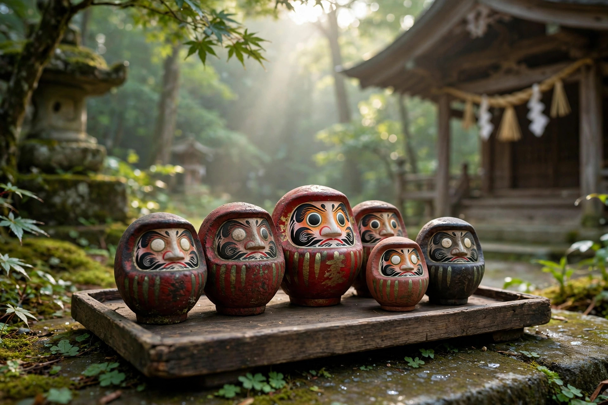

だるまの処分と供養の方法 ― お焚き上げ・神社・費用の目安

この記事の結論
役目を終えたダルマの処分方法は、①授かった（購入した）寺社に返して「お焚き上げ」をしてもらう、②だるま供養や人形供養を受け付ける神社・お寺に納める、③郵送供養を利用する、が基本です。お焚き上げ料は数百円〜数千円程度が目安。願いが叶ったかどうかに関係なく、1年を目安に感謝を込めて納めるのが習わしです。
だるまを納める3つの方法
1. 授かった寺社のお焚き上げ
最も一般的なのが、だるまを授かった寺社に持参し、お焚き上げ（古神札・古だるまの焼納）をお願いする方法です。多くの寺社では年の瀬から正月にかけて古いだるまの回収が行われ、どんど焼きや左義長などの行事で焚き上げられます。産地・高崎の少林山達磨寺では、だるま市に合わせて古いだるまを納める参拝者が多く訪れます（高崎だるまの歴史もあわせてご覧ください）。
2. 人形供養を受け付ける神社・お寺
購入先が分からない場合や遠方の場合は、人形供養やだるま供養を常時受け付けている神社・お寺に納めます。受付日や時間が決まっていることが多いため、事前にウェブサイトや電話で確認してから持参すると確実です。
3. 郵送供養
寺社まで足を運べない方向けに、郵送でだるまを受け付けて供養する仕組みを用意している寺社やサービスもあります。送料と供養料を合わせて支払う形式が一般的で、大きなだるまは対象外となる場合があります。
納める時期の考え方
だるまは「1年」を一区切りとする考え方が広く知られています。願いが叶ったら両目を入れたあと、その年のうちに感謝を込めて納める。叶わなかった場合も、見守ってくれたことへの感謝として納め、新しいだるまを迎え直す方が多くいます。目入れから供養までの全体の流れは目入れの作法と供養の記事でまとめています。
費用の目安
- 寺社のお焚き上げ：お賽銭・お焚き上げ料として数百円〜数千円程度（寺社・サイズにより異なる）
- 人形供養：1体あたり数千円程度の供養料を設定している寺社が多い
- 郵送供養：供養料＋送料。大型のだるまは追加料金の場合あり
※費用は目安です。寺社ごとに受付方法・料金が異なりますので、必ず事前に公式案内でご確認ください。
よくある質問
Q. だるまを普通のゴミに出してもよいですか？
A. 法的な決まりはありませんが、願いを託した縁起物をそのまま捨てることに抵抗がある方が多く、一般的には寺社のお焚き上げやだるま供養に納める方法が選ばれています。やむを得ず家庭で処分する場合は、感謝を伝え、塩で清めてから自治体のルールに従う方もいます。
Q. だるまの供養の費用はいくらくらいですか？
A. お焚き上げ料は寺社により異なりますが、数百円〜数千円程度が目安です。郵送供養の場合は、これに送料が加わります。大きなだるまは別途料金となる場合があるため、事前に確認すると安心です。
Q. 願いが叶わなかっただるまも供養できますか？
A. はい、成就の有無にかかわらず供養できます。1年を目安に、見守ってくれたことへの感謝を込めて納め、新しいだるまを迎える方も多くいます。
Q. 遠方でも郵送で供養を依頼できますか？
A. 郵送での供養を受け付けている寺社や、人形供養を扱うサービスがあります。受付方法は各寺社の案内を確認してください。
新しいだるまのご用意はDARUMA WORKSへ
供養で区切りをつけたら、次の目標へ新しいだるまを。定番サイズの卸売から名入れまで対応しています。事業紹介とお問い合わせフォームをご覧ください。